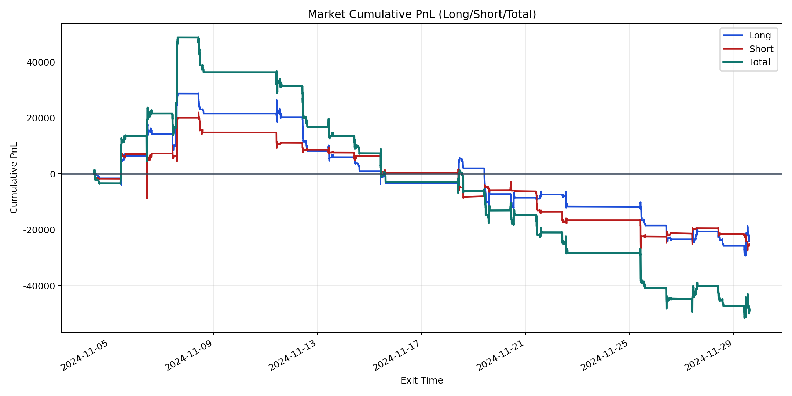
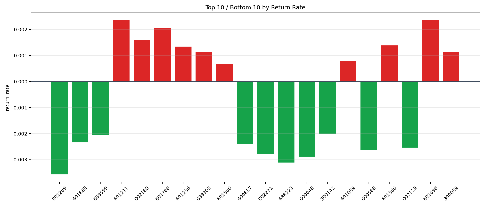

| repo_root | /home/haoranyou/data/output/dynamic_AUM_TAKER |
|---|---|
| period_months | 1 |
| period_label | 2024-11-04_to_2024-11-29 |
| start_time | 2024-11-04 09:49:02 |
| end_time | 2024-11-29 14:39:32 |
| n_trades | 8973 |
| n_symbols | 54 |
| total_pnl | -48417.17114999903 |
| long_total_pnl | -23469.395249997964 |
| short_total_pnl | -24947.77590000106 |
| total_entry_notional | 163374515.0 |
| long_entry_notional | 99457386.0 |
| short_entry_notional | 63917128.999999985 |
| total_return_rate | -0.00029635693884079184 |
| long_return_rate | -0.0002359743825360337 |
| short_return_rate | -0.0003903144006984585 |
| top_symbols_by_return | ["601211", "601698", "601788", "002180", "601360", "601236", "300059", "688303", "601059", "601800"] |
| bottom_symbols_by_return | ["001289", "688223", "600048", "002271", "600588", "002129", "600837", "601865", "688599", "300142"] |

